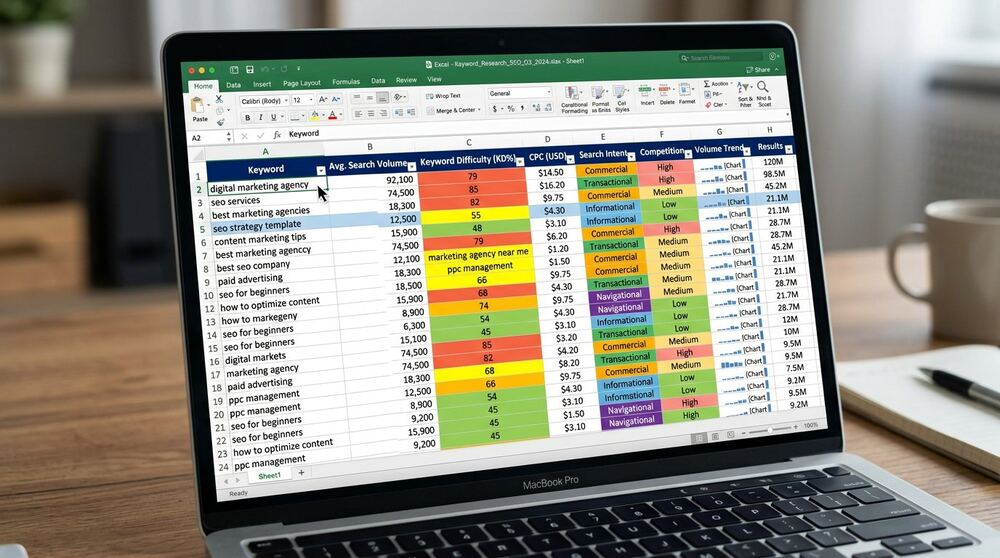
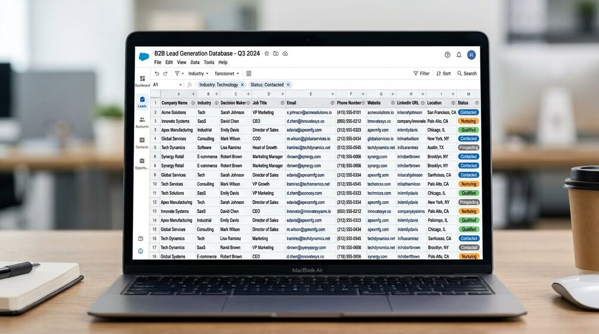
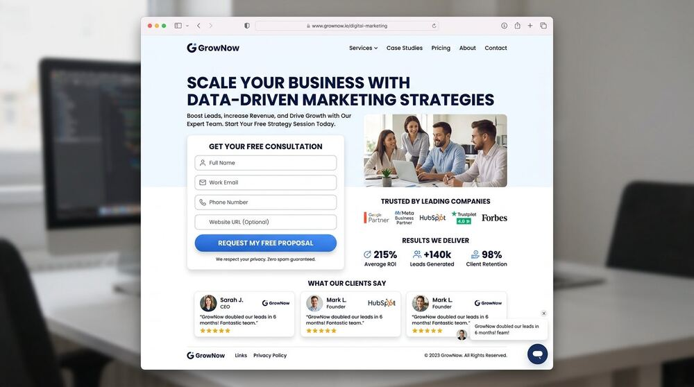
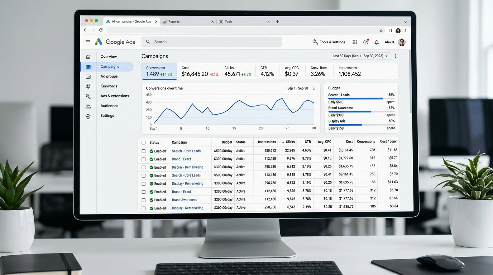

PRACTICAL GUIDES & INSIGHTS
The Digital Marketing & Web Development Blog
In-depth, experience-based guides on SEO, international SEO, keyword research, Google & Meta Ads, B2B lead generation, custom-coded web development, WordPress optimization and YouTube marketing. Every article is written to be useful first — the kind of checklist, framework and comparison you can act on the same day you read it. No fluff, no recycled hype, no invented statistics.
New here? Start with how to choose the right SEO service, the international SEO guide or the Google Ads management guide — then explore the clusters below by topic.
Showing 28 articles

SEOAug 6, 2026·17 min read
What Is Keyword Research and Why Is It Important for SEO?
Keyword research is the foundation every other SEO task stands on. Learn what it involves, how search intent works, and how to find keywords you can actually win.
Read Full Article →

SEOJul 28, 2026·13 min read
How SERP Analysis Helps Build a Better SEO Strategy
Google already tells you what it wants to rank for every keyword. SERP analysis is how you listen — before you write a single word.
Read Full Article →

SEOJul 15, 2026·15 min read
On-Page SEO Checklist for Small Business Websites
A practical, no-fluff checklist of on-page SEO essentials — titles, meta descriptions, headings, internal links, URLs and image optimization — you can apply page by page.
Read Full Article →

SEOJul 3, 2026·14 min read
Technical SEO Basics for New Websites
Crawling, indexing, sitemaps, robots.txt, canonicals, speed and structured data — the technical foundations every new website should get right from day one.
Read Full Article →

SEOJun 20, 2026·12 min read
What Makes a Website SEO-Friendly? 12 Essentials
An SEO-friendly website is built, not retrofitted. These twelve essentials separate sites that rank from sites that forever fight their own platform.
Read Full Article →
SEOJun 8, 2026·13 min read
How to Improve Your Website's Search Visibility Step by Step
Visibility is earned in layers: fix the technical base, aim at the right keywords, strengthen pages, earn authority and measure everything. A realistic roadmap.
Read Full Article →

Paid AdsMay 26, 2026·15 min read
SEO vs Google Ads: Which Is Better for Your Business?
One earns visibility over time, the other buys it today. A practical comparison of cost, speed, risk and long-term value — and why the best answer is usually both.
Read Full Article →

Paid AdsMay 12, 2026·15 min read
Google Ads vs Meta Ads: Choosing the Right Platform for Your Goals
Google captures existing demand; Meta creates it. Understanding that single difference makes the platform decision almost automatic.
Read Full Article →
Paid AdsApr 28, 2026·11 min read
The Power of Retargeting: Turning Website Visitors into Customers
Most of your visitors leave without buying. Retargeting is how you stay in front of them until they're ready — often the highest-ROI money in marketing.
Read Full Article →

Lead GenerationApr 14, 2026·16 min read
How to Generate B2B Leads: A Practical Framework
B2B lead generation fails when it's random. A complete framework: define the ideal profile, build targeted lists, verify data, reach out properly and measure everything.
Read Full Article →
Lead GenerationMar 30, 2026·12 min read
How to Build a Targeted Lead List for Sales and Ads
A step-by-step guide to building lead lists that convert: sources, fields, verification, organization and the quality rules that keep outreach alive.
Read Full Article →
Web DevelopmentMar 18, 2026·14 min read
How to Create a Professional Business Website That Builds Trust
A business website has one job: convert strangers into inquiries. Structure, content, speed and proof — how to plan a website that earns trust from the first click.
Read Full Article →

Web DevelopmentMar 5, 2026·16 min read
HTML vs WordPress for Business Websites: An Honest Comparison
No dogma, no 'always better' — a straight comparison of custom-coded websites and WordPress across performance, SEO, security, cost and maintenance.
Read Full Article →

Web DevelopmentFeb 20, 2026·11 min read
Why Responsive Web Design Matters for SEO and Conversions
Mobile-friendliness is both a ranking requirement and a conversion requirement. What responsive design really means, how Google evaluates it, and where most sites fail.
Read Full Article →
Web DevelopmentFeb 6, 2026·13 min read
Designing High-Converting Landing Pages: Principles That Matter
A landing page has one job and one moment to do it. Message match, hierarchy, proof, friction and speed — the principles behind pages that convert.
Read Full Article →

Website OptimizationJan 22, 2026·12 min read
How Website Speed Affects User Experience and SEO
Speed is where user experience and search rankings meet. Core Web Vitals explained in plain language, plus the fixes that recover most lost milliseconds.
Read Full Article →
Website OptimizationJan 10, 2026·11 min read
How to Optimize Images for SEO and Faster Loading Pages
Images are the heaviest thing on most pages and an underused SEO signal. Formats, sizes, filenames, alt text and lazy loading — the complete, practical guide.
Read Full Article →

Digital MarketingDec 15, 2025·13 min read
How Small Businesses Can Start With Digital Marketing
No budget for everything? Good — you don't need everything. A prioritized, realistic starting plan for small businesses with more ambition than budget.
Read Full Article →
Social MediaNov 28, 2025·12 min read
Social Media Marketing for Small Businesses: Where to Start
You don't need every platform — you need one done well. Platform selection, content pillars, a realistic posting system and when to start paying for reach.
Read Full Article →

FreelancingNov 10, 2025·13 min read
How to Build a Professional Freelance Portfolio That Wins Clients
Clients don't hire skills — they hire evidence. How to build a portfolio that proves competence honestly, even when you're starting with zero clients.
Read Full Article →
SEOSep 16, 2026·18 min read
International SEO: How to Get Customers in the USA, UK, Canada and Beyond
Ranking in another country takes more than translation. Targeting, site structure, hreflang, local signals and content strategy — the complete international SEO playbook.
Read Full Article →

Paid AdsSep 16, 2026·19 min read
Google Ads Management: The Complete Small-Business Guide
Search, Display and YouTube campaigns that waste nothing: account structure, keyword strategy, ad copy, conversion tracking, budgets and weekly optimization routines.
Read Full Article →
Paid AdsSep 16, 2026·18 min read
Meta Ads (Facebook & Instagram): A Practical Guide for Businesses
Stop boosting posts and start running campaigns: objectives, audience layers, creative testing, lead forms, retargeting and optimization for Facebook & Instagram Ads.
Read Full Article →
SEOSep 16, 2026·17 min read
Local SEO & Google Business Profile: The Complete Guide for Service Businesses
Win the map pack and local searches: Google Business Profile optimization, local keywords, citations, reviews and location pages — the highest-ROI channel for local businesses.
Read Full Article →
Web DevelopmentSep 16, 2026·17 min read
WordPress SEO & Optimization: Speed, Security and Rankings
WordPress can rank superbly — when it's lean. Theme selection, plugin discipline, speed optimization, security hardening and SEO configuration, step by step.
Read Full Article →
Digital MarketingSep 16, 2026·16 min read
YouTube SEO & Marketing: Grow Search Traffic with Video
YouTube is the world's second search engine. Keyword research, titles, thumbnails, retention and channel strategy — how videos rank and turn viewers into customers.
Read Full Article →
Lead GenerationSep 16, 2026·17 min read
B2B Lead Generation for International Markets: Lists That Actually Convert
Cross-border prospecting done right: market selection, ICP design, sourcing, verification, compliance and outreach-ready formatting for the USA, UK, Canada, Australia & beyond.
Read Full Article →